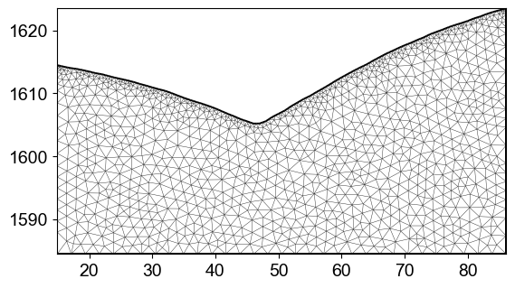
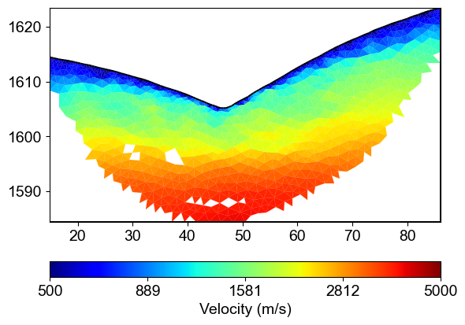
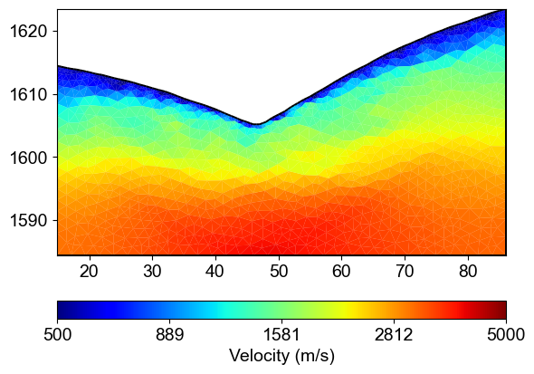
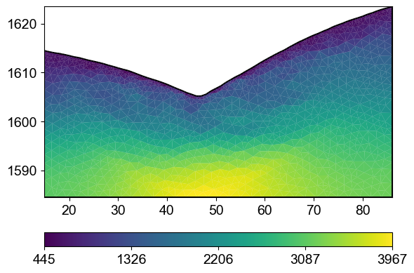
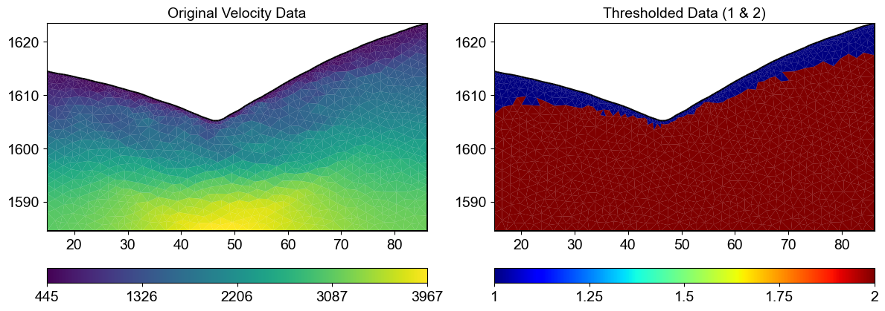
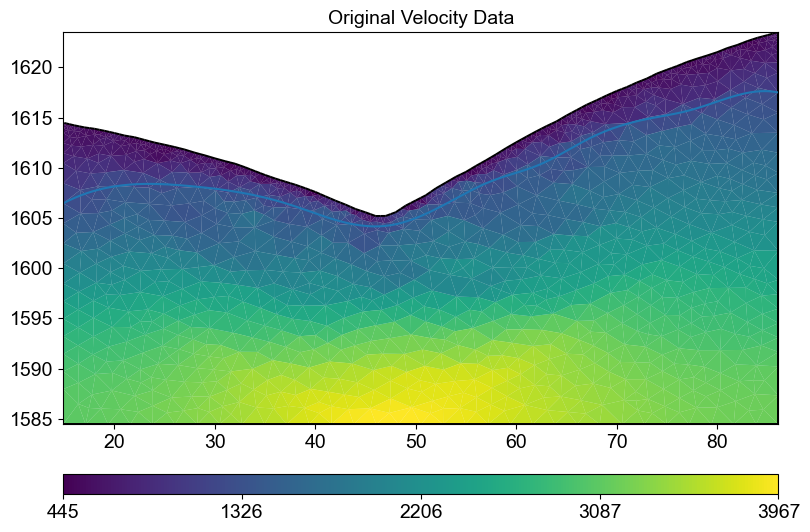
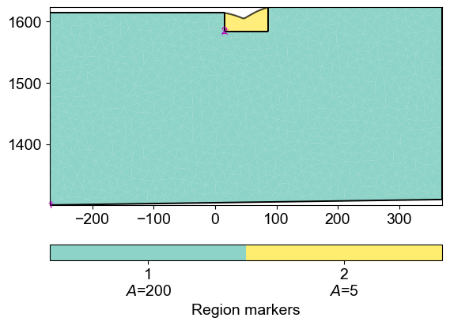
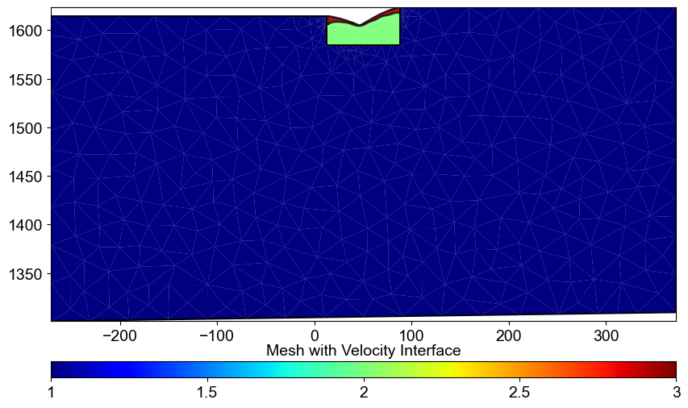
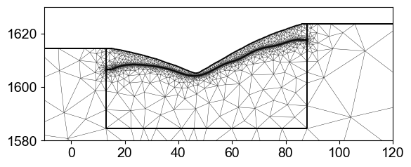

Ex 6. Structure-Constrained Resistivity Inversion
This example demonstrates how to incorporate structural information from seismic velocity models into ERT inversion for improved subsurface imaging.
The workflow includes:
Loading seismic travel time data and performing velocity inversion
Extracting velocity interfaces at specified thresholds
Creating ERT meshes with geological layer boundaries
Structure-constrained ERT inversion using velocity-derived interfaces
Comparison with unconstrained inversion results
Structure-constrained inversion significantly improves the accuracy of resistivity models by incorporating a priori geological information, leading to more reliable hydrological interpretations.
[1]:
import matplotlib.pyplot as plt
import numpy as np
import pygimli as pg
from pygimli.physics import ert
import pygimli.physics.traveltime as tt
import os
import sys
import matplotlib.pylab as pylab
# Setup package path for development
try:
# For regular Python scripts
current_dir = os.path.dirname(os.path.abspath(__file__))
except NameError:
# For Jupyter notebooks
current_dir = os.getcwd()
# Add the parent directory to Python path
parent_dir = os.path.dirname(current_dir)
if parent_dir not in sys.path:
sys.path.append(parent_dir)
# Import PyHydroGeophysX modules
from PyHydroGeophysX.inversion.time_lapse import TimeLapseERTInversion
# Set up matplotlib parameters
params = {'legend.fontsize': 15,
'axes.labelsize': 14,
'axes.titlesize':14,
'xtick.labelsize':14,
'ytick.labelsize':14}
pylab.rcParams.update(params)
plt.rcParams["font.family"] = "Arial"
[2]:
output_dir = "C:/Users/HChen8/Documents/GitHub/PyHydroGeophysX/examples/results/Structure_WC"
os.makedirs(output_dir, exist_ok=True)
load data
load seismic data
[3]:
ttData = tt.load("C:/Users/HChen8/Documents/GitHub/PyHydroGeophysX/examples//results/workflow_example/synthetic_seismic_data.dat")
# load ERT data
ertData = ert.load("C:/Users/HChen8/Documents/GitHub/PyHydroGeophysX/examples//results/TL_measurements/appres/synthetic_data30.dat")
Using ERT data to create a mesh to take care of the boundary
[4]:
paraBoundary = 0.1
ert1 = ert.ERTManager(ertData)
grid = ert1.createMesh(data=ertData,quality = 31,paraDX=0.5, paraMaxCellSize=2, boundaryMaxCellSize=3000,smooth=[2, 2],
paraBoundary = paraBoundary, paraDepth = 30.0)
ert1.setMesh(grid)
mesh = ert1.fop.paraDomain
mesh.setCellMarkers(np.ones((mesh.cellCount()))*2)
pg.show(mesh)
24/05/25 - 23:48:53 - pyGIMLi - INFO - Found 2 regions.
24/05/25 - 23:48:53 - pyGIMLi - INFO - (ERTModelling) Region with smallest marker (1) set to background.
24/05/25 - 23:48:53 - pyGIMLi - INFO - Found 2 regions.
24/05/25 - 23:48:53 - pyGIMLi - INFO - (ERTModelling) Region with smallest marker (1) set to background.
24/05/25 - 23:48:53 - pyGIMLi - INFO - Creating forward mesh from region infos.
24/05/25 - 23:48:53 - pyGIMLi - INFO - Creating refined mesh (H2) to solve forward task.
24/05/25 - 23:48:53 - pyGIMLi - INFO - Mesh for forward task: Mesh: Nodes: 5661 Cells: 10936 Boundaries: 8394
[4]:
(<Axes: >, None)

travel time inversion
[5]:
TT = pg.physics.traveltime.TravelTimeManager()
TT.setMesh(mesh)
TT.invert(ttData, lam=50,
zWeight=0.2,vTop=500, vBottom=5000,
verbose=1, limits=[100., 6000.])
24/05/25 - 23:48:53 - pyGIMLi - INFO - Found 1 regions.
24/05/25 - 23:48:53 - pyGIMLi - INFO - Creating forward mesh from region infos.
24/05/25 - 23:48:53 - pyGIMLi - INFO - Creating refined mesh (secnodes: 2) to solve forward task.
24/05/25 - 23:48:53 - pyGIMLi - INFO - Create gradient starting model. 500: 5000
24/05/25 - 23:48:53 - pyGIMLi - INFO - Created startmodel from forward operator: 2119, min/max=0.000200/0.002000
24/05/25 - 23:48:53 - pyGIMLi - INFO - Starting inversion.
fop: <pygimli.physics.traveltime.modelling.TravelTimeDijkstraModelling object at 0x000002518F8DDC60>
Data transformation: <pgcore._pygimli_.RTrans object at 0x000002519260D4E0>
Model transformation (cumulative):
0 <pgcore._pygimli_.RTransLogLU object at 0x000002519257B8B0>
min/max (data): 0.0014/0.06
min/max (error): 4.35%/6.41%
min/max (start model): 2.0e-04/0.002
--------------------------------------------------------------------------------
inv.iter 0 ... chi² = 39.27
--------------------------------------------------------------------------------
inv.iter 1 ...
chi² = 1.70 (dPhi = 95.19%) lam: 50.0
--------------------------------------------------------------------------------
inv.iter 2 ... chi² = 0.95 (dPhi = 39.87%) lam: 50.0
################################################################################
# Abort criterion reached: chi² <= 1 (0.95) #
################################################################################
[5]:
2119 [522.9305591148109,...,3018.0642366338184]
[6]:
ax, cbar = TT.showResult(cMap='jet',coverage=TT.standardizedCoverage(),cMin=500,cMax=5000)

[7]:
ax, cbar = TT.showResult(cMap='jet',cMin=500,cMax=5000)

[8]:
pg.show(TT.paraDomain,TT.model.array())
print(TT.paraDomain)
print(TT.model.array())
Mesh: Nodes: 1172 Cells: 2119 Boundaries: 223
[ 522.93055911 702.58818925 656.7492625 ... 3718.59686799 3768.46196875
3018.06423663]

[9]:
import numpy as np
# Assuming TT.model.array() gives you the velocity values
velocity_data = TT.model.array()
# Get the mesh shape
mesh = TT.paraDomain
cell_centers = mesh.cellCenters()
x_coords = cell_centers[:,0] # X-coordinates of cell centers
z_coords = cell_centers[:,1] # Z-coordinates (depth) of cell centers
# Create a new array for the thresholded values
thresholded = np.ones_like(velocity_data, dtype=int)
# Get unique x-coordinates (horizontal distances)
unique_x = np.unique(x_coords)
# For each vertical column (each unique x-coordinate)
for x in unique_x:
# Get indices of cells in this column, sorted by depth (z-coordinate)
column_indices = np.where(x_coords == x)[0]
column_indices = column_indices[np.argsort(z_coords[column_indices])]
# Check if any cell in this column exceeds the threshold
threshold_crossed = False
# Process cells from top to bottom
for idx in column_indices:
if velocity_data[idx] >= 1200 or threshold_crossed:
thresholded[idx] = 2
threshold_crossed = True
# Otherwise thresholded[idx] remains 1
# Now thresholded contains your classified values (1 or 2)
# Let's visualize the result
import matplotlib.pyplot as plt
# Create a figure with two subplots to compare
fig, (ax1, ax2) = plt.subplots(1, 2, figsize=(12, 6))
# Original data
pg.show(mesh, velocity_data, ax=ax1, cMap='viridis', colorBar=True)
ax1.set_title('Original Velocity Data')
# Thresholded data
pg.show(mesh, thresholded, ax=ax2, cMap='jet', colorBar=True)
ax2.set_title('Thresholded Data (1 & 2)')
plt.tight_layout()
plt.show()

[10]:
from scipy.interpolate import interp1d
def extract_velocity_interface(mesh, velocity_data, threshold=1200,interval = 4.0 ):
"""
Extract the interface where velocity equals the threshold value.
Parameters:
mesh - The PyGIMLi mesh
velocity_data - The velocity values
threshold - The velocity value defining the interface (default: 1200)
Returns:
x_dense, z_dense - Arrays with x and z coordinates of the smooth interface
"""
# Get cell centers
cell_centers = mesh.cellCenters()
x_coords = cell_centers[:,0]
z_coords = cell_centers[:,1]
# Get x-range for complete boundary
x_min, x_max = np.min(x_coords), np.max(x_coords)
# Create bins across the entire x-range
# Adjust for desired precision
x_bins = np.arange(x_min, x_max + interval, interval)
# Arrays to store interface points
interface_x = []
interface_z = []
# For each bin, find the velocity interface
for i in range(len(x_bins)-1):
# Get all cells in this x-range
bin_indices = np.where((x_coords >= x_bins[i]) & (x_coords < x_bins[i+1]))[0]
if len(bin_indices) > 0:
# Get velocity values and depths for this bin
bin_velocities = velocity_data[bin_indices]
bin_depths = z_coords[bin_indices]
# Sort by depth
sort_indices = np.argsort(bin_depths)
bin_velocities = bin_velocities[sort_indices]
bin_depths = bin_depths[sort_indices]
# Find where velocity crosses the threshold
for j in range(1, len(bin_velocities)):
if (bin_velocities[j-1] < threshold and bin_velocities[j] >= threshold) or \
(bin_velocities[j-1] >= threshold and bin_velocities[j] < threshold):
# Linear interpolation for exact interface depth
v1 = bin_velocities[j-1]
v2 = bin_velocities[j]
z1 = bin_depths[j-1]
z2 = bin_depths[j]
# Calculate the interpolated z-value where velocity = threshold
ratio = (threshold - v1) / (v2 - v1)
interface_depth = z1 + ratio * (z2 - z1)
interface_x.append((x_bins[i] + x_bins[i+1]) / 2)
interface_z.append(interface_depth)
break
# Ensure we have interface points for the entire range
# If first point is missing, extrapolate from the first available points
if len(interface_x) > 0 and interface_x[0] > x_min + interval:
interface_x.insert(0, x_min)
# Use the slope of the first two points to extrapolate
if len(interface_x) > 2:
slope = (interface_z[1] - interface_z[0]) / (interface_x[1] - interface_x[0])
interface_z.insert(0, interface_z[0] - slope * (interface_x[1] - x_min))
else:
interface_z.insert(0, interface_z[0])
# If last point is missing, extrapolate from the last available points
if len(interface_x) > 0 and interface_x[-1] < x_max - interval:
interface_x.append(x_max)
# Use the slope of the last two points to extrapolate
if len(interface_x) > 2:
slope = (interface_z[-1] - interface_z[-2]) / (interface_x[-1] - interface_x[-2])
interface_z.append(interface_z[-1] + slope * (x_max - interface_x[-1]))
else:
interface_z.append(interface_z[-1])
# Create a dense interpolation grid for smoothing
x_dense = np.linspace(x_min, x_max, 500) # 500 points for smooth curve
# Apply cubic interpolation for smoother interface
if len(interface_x) > 3:
try:
interp_func = interp1d(interface_x, interface_z, kind='cubic',
bounds_error=False, fill_value="extrapolate")
z_dense = interp_func(x_dense)
# Apply additional smoothing
from scipy.signal import savgol_filter
z_dense = savgol_filter(z_dense, window_length=31, polyorder=3)
except:
# Fall back to linear interpolation if cubic fails
interp_func = interp1d(interface_x, interface_z, kind='linear',
bounds_error=False, fill_value="extrapolate")
z_dense = interp_func(x_dense)
else:
# Not enough points for cubic interpolation
interp_func = interp1d(interface_x, interface_z, kind='linear',
bounds_error=False, fill_value="extrapolate")
z_dense = interp_func(x_dense)
return x_dense, z_dense
[11]:
# Call the function with velocity data
smooth_x, smooth_z = extract_velocity_interface(mesh, velocity_data, threshold=1200,interval = 5)
[12]:
fig, ax1 = plt.subplots(1, 1, figsize=(12, 6))
# Original data
pg.show(mesh, velocity_data, ax=ax1, cMap='viridis', colorBar=True)
ax1.set_title('Original Velocity Data')
ax1.plot(smooth_x, smooth_z)
[12]:
[<matplotlib.lines.Line2D at 0x251bded82d0>]

[13]:
geo = pg.meshtools.createParaMeshPLC(ertData, quality=31, paraMaxCellSize=5,
paraBoundary=paraBoundary,paraDepth = 30.0,boundaryMaxCellSize=200)
pg.show(geo)
[13]:
(<Axes: >, None)

[14]:
def add_velocity_interface(ertData, smooth_x, smooth_z, paraBoundary=2, boundary=1):
"""
Add a velocity interface line to the geometry and create a mesh with different markers:
- Outside survey area: marker = 1
- Inside survey area, above velocity line: marker = 2
- Inside survey area, below velocity line: marker = 3
Parameters:
ertData - ERT data with sensor positions
smooth_x, smooth_z - Arrays with x and z coordinates of the velocity interface
paraBoundary, boundary - Mesh parameters
Returns:
markers - Array with cell markers
meshafter - The created mesh with updated markers
"""
# Create the initial parameter mesh
geo = pg.meshtools.createParaMeshPLC(ertData, quality=32, paraMaxCellSize=30,
paraBoundary=paraBoundary, paraDepth=30.0,
boundaryMaxCellSize=500)
# Stack x and z coordinates for the interface
interface_points = np.vstack((smooth_x, smooth_z)).T
# Extend the interface line beyond the data range by paraBoundary
input_points = np.vstack((
np.array([[interface_points[0][0] - paraBoundary, interface_points[0][1]]]),
interface_points,
np.array([[interface_points[-1][0] + paraBoundary, interface_points[-1][1]]])
))
# Create a polygon line for the interface
interface_line = pg.meshtools.createPolygon(input_points.tolist(), isClosed=False,
interpolate='linear', marker=99)
# Add the interface to the geometry
geo_with_interface = geo + interface_line
# Create a mesh from the combined geometry
meshafter = pg.meshtools.createMesh(geo_with_interface, quality=28)
# Initialize all markers to 1 (outside region)
markers = np.ones(meshafter.cellCount())
# Identify the survey area
survey_left = ertData.sensors()[0][0] - paraBoundary
survey_right = ertData.sensors()[-1][0] + paraBoundary
# Process each cell
for i in range(meshafter.cellCount()):
cell_x = meshafter.cell(i).center().x()
cell_y = meshafter.cell(i).center().y()
# Only modify markers within the survey area
if cell_x >= survey_left and cell_x <= survey_right:
# Interpolate the interface height at this x position
interface_y = np.interp(cell_x, input_points[:, 0], input_points[:, 1])
# Set marker based on position relative to interface
if abs(cell_y) < abs(interface_y):
markers[i] = 2 # Below interface
else:
markers[i] = 3 # Above interface
markers[meshafter.cellMarkers()==1] = 1 # Keep original markers for outside cells`
# Set the updated markers
meshafter.setCellMarkers(markers)
return markers, meshafter
# Example usage:
# markers, meshafter = add_velocity_interface(ertData, smooth_x, smooth_z)
# pg.show(meshafter, markers=True, label='Region markers')
[15]:
markers, mesh_with_interface = add_velocity_interface(ertData, smooth_x, smooth_z)
mesh_with_interface
[15]:
Mesh: Nodes: 2828 Cells: 5444 Boundaries: 8271
[16]:
fig, ax = plt.subplots(figsize=(10, 6))
pg.show(mesh_with_interface, markers, ax=ax, cMap='jet', colorBar=True)
plt.title('Mesh with Velocity Interface')
plt.show()

[17]:
ax, cbar = pg.show(mesh_with_interface)
ax.set_xlim([-10,120])
ax.set_ylim([1580,1630])
[17]:
(1580.0, 1630.0)

[18]:
mesh_with_interface.save("C:/Users/HChen8/Documents/GitHub/PyHydroGeophysX/examples/results/Structure_WC/mesh_with_interface.bms")
[18]:
1